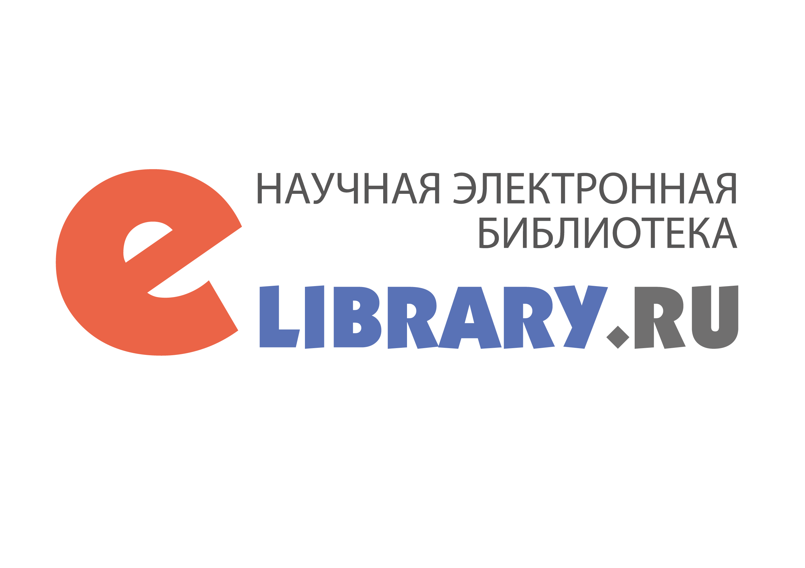

ISSN **-***-** (Online)
Knowledge — the key to new
horizons
Organization Fee - 0₽
"Intellectuals"
multidisciplinary scientific
online journal.
Form of periodical distribution
Online publication.
Language
Russian, English.
Distribution territory
Russian Federation, foreign countries.
Frequency
12 issues per year.
The journal has been published since 2025.
Journal articles are hosted by OOO "Scientific Electronic Library" on the eLIBRARY.RU platform in open access for users. All journal articles undergo mandatory peer review.
